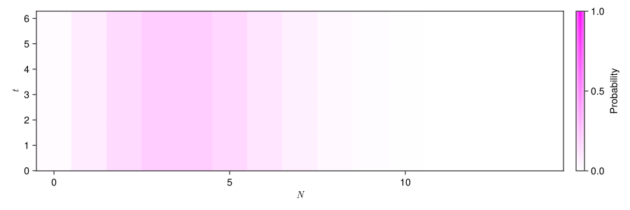
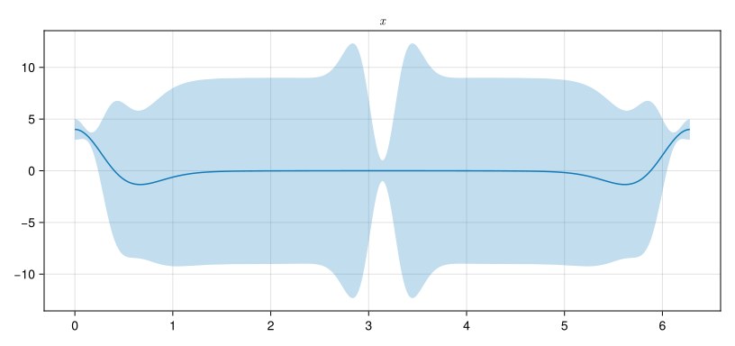

Kerr nonlinearities
Inspirations taken from this QuTiP tutorial by J. R. Johansson.
This tutorial demonstrates the use of
by exploring Kerr nonlinearities.
Introduction
Kerr nonlinearities arise from the interaction between the electromagnetic field and a nonlinear medium with a significant third-order susceptibility, \(\chi^{(3)}\). Since experiments typically use monochromatic light sources such as lasers, we restrict our discussion to a single electromagnetic mode.
To derive the Hamiltonian, we start by reviewing the classical theory:
- Nonlinear polarization density:
In a nonlinear medium, the \(i\)-th component of the polarization density \(\vec{\mathcal{P}}\) is given by \[ \mathcal{P}_i = \sum_j \chi^{(1)}_{ij} E_j + \sum_{jk} \chi^{(2)}_{ijk} E_j E_k + \sum_{jkl} \chi^{(3)}_{ijkl} E_j E_k E_l + \dots \] for \(i,j,k,l \in \{x,y,z\}\), where \({\chi}^{(m)}\) is the \(m\)-th order nonlinear susceptibility and \(E\) is the electric field. By the assumption that only the first and third order terms are non-vanishing for our Kerr medium in the single light mode, we can approximate the polarization density as \[ \mathcal{P} \simeq \chi^{(1)} E + \chi^{(3)} E^3 \] with the subscripts for spatial components dropped. - Interaction of the Electric Field with the Polarization Density:
The interaction energy is proportional to \(\mathcal{P} \cdot E\). The nonlinear term in the Hamiltonian is therefore \[ H_{\text{NL}} = \chi E^4 \] where \(\chi\) is the effective coefficient primarily determined by the nonlinear susceptibility. - Quantization of the Electromagnetic Mode:
In quantum optics, the electric field operator for a single mode is proportional to the quardrature operator \(\hat{x} = \frac{(\hat{a} + \hat{a}^\dagger)}{2}\) where \(\hat{a}\) is the annihilation operator.
We then combine the above properties, expand \((\hat{a}^\dagger + \hat{a})^4\), drop the terms that do not conserve the photon number or irrelevant to this tutorial with rotating wave approximation (RWA), and put the remaining terms in normal order. Finally, we arrive at the effective Hamiltonian \[ H = \frac{\chi}{2} (\hat{a}^\dagger)^2 \hat{a}^2, \] where \(\chi\) again absorbed the coefficients.
Code demonstration
We begin by defining functions for visualization:
plot_varianceplots the expectation value of an operatoropand shades the variance.plot_Fock_distplots the dynamics of the Fock distribution.
function plot_variance(op, tlist, states)
e = real.(expect(op, states))
v = real.(variance(op, states))
fig = Figure()
ax = Axis(fig[1,1])
lines!(ax, tlist, e)
band!(ax, tlist, e .- v, e .+ v, alpha = 0.3)
return fig, ax
end
function plot_Fock_dist(tlist, states)
fig = Figure(size = (900, 300))
ax = Axis(
fig[1,1],
xlabel = L"N",
ylabel = L"t"
)
n_col = prod(states[1].dims)
n_row = length(tlist)
data = zeros(Float64, n_row, n_col)
for (idx, state) in enumerate(states)
data[idx, :] = real.(diag(state))
end
hm = heatmap!(
ax,
0:(n_col-1),
tlist,
data',
colormap = cgrad([:white, :magenta]),
colorrange = (0,1)
)
Colorbar(fig[1,2], hm, label = "Probability")
return fig, ax
endplot_Fock_dist (generic function with 1 method)Next, we define the system parameters and operators.
Quantum Object: type=Operator() dims=[15] size=(15, 15) ishermitian=true
15×15 SparseArrays.SparseMatrixCSC{ComplexF64, Int64} with 13 stored entries:
⋅ ⋅ ⋅ … ⋅ ⋅ ⋅
⋅ ⋅ ⋅ ⋅ ⋅ ⋅
⋅ ⋅ 1.0+0.0im ⋅ ⋅ ⋅
⋅ ⋅ ⋅ ⋅ ⋅ ⋅
⋅ ⋅ ⋅ ⋅ ⋅ ⋅
⋅ ⋅ ⋅ … ⋅ ⋅ ⋅
⋅ ⋅ ⋅ ⋅ ⋅ ⋅
⋅ ⋅ ⋅ ⋅ ⋅ ⋅
⋅ ⋅ ⋅ ⋅ ⋅ ⋅
⋅ ⋅ ⋅ ⋅ ⋅ ⋅
⋅ ⋅ ⋅ … ⋅ ⋅ ⋅
⋅ ⋅ ⋅ ⋅ ⋅ ⋅
⋅ ⋅ ⋅ 66.0+0.0im ⋅ ⋅
⋅ ⋅ ⋅ ⋅ 78.0+0.0im ⋅
⋅ ⋅ ⋅ ⋅ ⋅ 91.0+0.0imSince we are considering unitary dynamics, i.e., no dissipation, the dynamics are fully captured for \(\chi t \in \left[0, 2 \pi \right]\), and the coherent initial state is representative for a laser light source.
Note that if the keyword argument e_ops is not supplied to mesolve, the returned result contains the state at each time point at field states. Consult the user guide to TimeEvolutionSol for more details.
Progress: [==============================] 100.0% --- Elapsed Time: 0h 00m 00s (ETA: 0h 00m 00s)Solution of time evolution
(return code: Success)
--------------------------
num_states = 629
num_expect = 0
ODE alg.: OrdinaryDiffEqTsit5.Tsit5{typeof(OrdinaryDiffEqCore.trivial_limiter!), typeof(OrdinaryDiffEqCore.trivial_limiter!), Static.False}(OrdinaryDiffEqCore.trivial_limiter!, OrdinaryDiffEqCore.trivial_limiter!, static(false))
abstol = 1.0e-8
reltol = 1.0e-6We first check the expectation value dynamics of the number operator n with the two visualization functions we defined previously.

CairoMakie.Screen{PDF}As expected, the photon number is conserved throughout. Either the expectation value or the Fock distribution are conserved in the nonlinear interaction.
We now turn to the quadrature operators. The expectation value dynamics of x and p are plotted below.

There are two clear observations from these plots that indicate how the nonlinear interaction has modified the initial coherent state:
Non-oscillatory Behavior of Expectation Values:
In a quantum harmonic oscillator, the expectation values of the quadrature operators typically exhibit simple sinusoidal oscillations. However, under the Kerr nonlinearity, the expectation values deviate from this periodic behavior. This deviation reflects the phase distortions introduced by the nonlinear term in the Hamiltonian.Departure from Minimum Uncertainty:
Coherent states in a harmonic oscillator are known to saturate the uncertainty relation, meaning they maintain a constant uncertainty product, ideally at
\[ \Delta x \Delta p = (\frac{\hbar}{2})^2. \] In contrast, the evolving state in the presence of the Kerr interaction shows a time-varying variance product. This variation is indicative of squeezing effects and confirms that the state is no longer a minimum uncertainty state.
We can extend the investigation to the Wigner function with the built-in function plot_wigner.

As the plot revealed, the state at \(\chi t = \pi\) is in fact the cat state for a single mode. One of the main characteristics of the cat state is the superposition of two coherent states with opposite phase.
The dynamics of the Wigner function offer a powerful phase-space perspective on the quantum state evolution under the Kerr nonlinearity. We again use plot_wigner to setup the initial plot and update frames with the function wigner to record the dynamics as an animated GIF.
fig4, ax4, hm4 = plot_wigner(result.states[1])
Colorbar(fig4[1,2], hm4)
record(fig4, "kerr_wigner_dyn.gif", 1:length(tlist); framerate=24) do t
wig = wigner(
result.states[t],
range(-7.5, 7.5, 200),
range(-7.5, 7.5, 200)
)
ax4.title = "χt = " * string(round(tlist[t]; digits = 2))
hm4[3] = transpose(wig)
end"kerr_wigner_dyn.gif"
As the animation progresses, you can observe how the initial Gaussian distribution, typical of a coherent state, is gradually deformed by the nonlinear interaction.
Version Information
QuantumToolbox.jl: Quantum Toolbox in Julia
≡≡≡≡≡≡≡≡≡≡≡≡≡≡≡≡≡≡≡≡≡≡≡≡≡≡≡≡≡≡≡≡≡≡≡≡≡≡≡≡≡≡≡≡≡
Copyright © QuTiP team 2022 and later.
Current admin team:
Alberto Mercurio and Yi-Te Huang
Package information:
====================================
Julia Ver. 1.12.1
QuantumToolbox Ver. 0.37.0
SciMLOperators Ver. 1.9.0
LinearSolve Ver. 3.28.0
OrdinaryDiffEqCore Ver. 1.36.0
System information:
====================================
OS : Linux (x86_64-linux-gnu)
CPU : 4 × AMD EPYC 7763 64-Core Processor
Memory : 15.621 GB
WORD_SIZE: 64
LIBM : libopenlibm
LLVM : libLLVM-18.1.7 (ORCJIT, znver3)
BLAS : libopenblas64_.so (ilp64)
Threads : 4 (on 4 virtual cores)
+---------------------------------------------------+
| Please cite QuantumToolbox.jl in your publication |
+---------------------------------------------------+
For your convenience, a bibtex reference can be easily generated using `QuantumToolbox.cite()`.